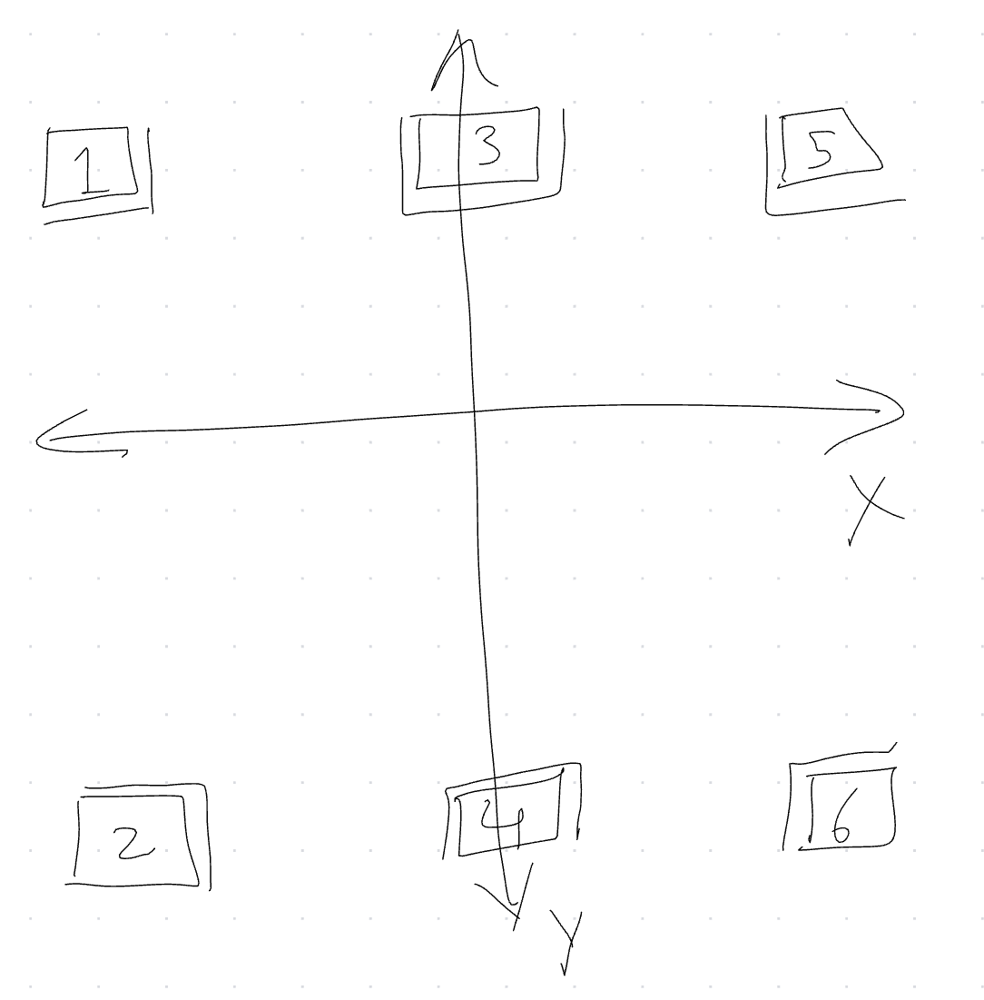

H-Shifter
Joystick as H-shifter
This plugin will let you use a 2-axis joystick as a 6 position H-shifter in
your driving game. 2 additional gears (usually 7 and Reverse) are possible
by assigning regular buttons.
Setup
In your desired Joystick Gremlin profile, go to the Plugins tab and add
the H-shifter plugin (joystick_gremlin/plugins/h_shifter.py). The following
configuration is needed:
Neutral- Physical button to set gear to neutral. Needed for self-centering axes.Reverse (input)- Physical button to set gear to reverse. Needed because we only have 6 positions via the axes.Gear 7 (input)- Physical button to set the 7th gear. Needed because we only have 6 positions via the axes.Left-right axis- Physical left-right axis to use for H-shifter.Up-down axis- Physical up-down axis to use for H-shifter.Gear 1- vJoy button to use for gear 1.Gear 2- vJoy button to use for gear 2.Gear 3- vJoy button to use for gear 3.Gear 4- vJoy button to use for gear 4.Gear 5- vJoy button to use for gear 5.Gear 6- vJoy button to use for gear 6.Gear 7- vJoy button to use for gear 7.Reverse (output)- vJoy button to use for reverse.
An experimental setting can be offered in a future release, currently not implemented:
Axes are self-centering: Defaults toTrue, used when the axes are self-centering with a spring, False if they don't return to neutral without user input (e.g. if you dialed up the clutch or loosened the spring). This is not how I use it, but you might want to experiment.
In-game usage
I suggest enabling the profile with this plugin, open "Input Viewer" in Joystick Gremlin, and play with the joystick to induce H-shifter transitions.
Here's a lazily scribbled diagram for the exactly two people that will try to use this plugin:

With the Axes are self-centering plugin configuration set to True,
moving the joystick to one of the six gear "regions" will cause the
corresponding vJoy button to be pressed and held, even if the joystick
returns to center.
The double lines at the edges of each region show the "transition" zone, which is used to emulate a brief "neutral" transition when changing gears. Some games care about this.
The Neutral binding can be used shift to neutral. The Reverse (input)
and Gear 7 (input)
bindings can be used to bind extra gears; usually this will be "reverse" and "gear 7".
Some games might require you to press the Neutral button before Reverse or Gear 7.
Known Compatible Games
I expect this to work with all games that support a DirectInput H-shifter. Known to work with:
- Dirt 3 (with
IndirectInputvendor spoof) - American Truck Simulator
- Euro Truck Simualtor 2
- F1 2018 (probably later F1 games should also work)
- Crew 2 (including vehicles with 7 gears)